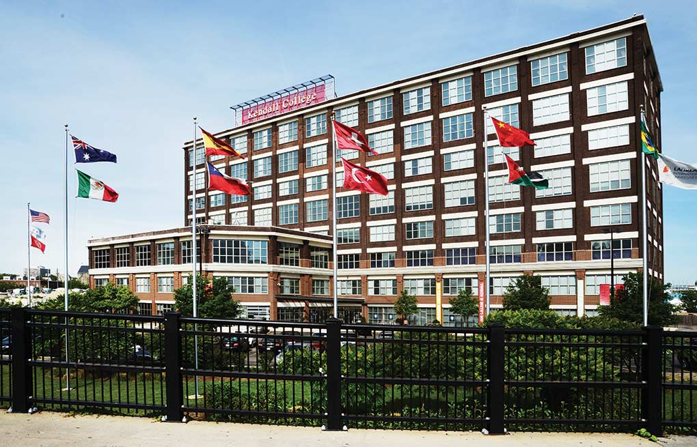

I was born and raised in Kazakhstan. Speak fluently in both languages: Russian and English.In the process of learning Kazakh (my native language) and Chinese.
Lived in three different countries in my lifetime: USA, Spain and Australia. Its one of the main reasons why I adapt to new environments fast.I believe that every place I visited laid the groundwork to the person I am today and I am grateful for that.
Studying Web-Development and hoping to successfully change career paths from Hospitality Industry.It was a valuable experience that taught me about nuances of working with people, from a customer service employee perspective.
What makes me happy:
In my spare time I love reading books and watching all kinds of tv-shows,movies and anime.In my blog I talk about my favorite ones in more detail.
I love spending time with my friends when I get a chance.Especially playing board games with them.My favorite ones are "Exploding Kittens" and "Chameleon".Sometimes,even though I'm not a gamer,I like to play Nintendo Switch games with them too.
My hometown:Astana,Kazakhstan

College I graduated from (Kendall College,Chicago)

Let's connect!